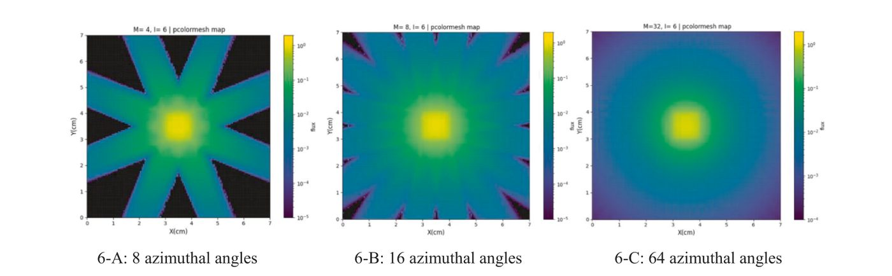
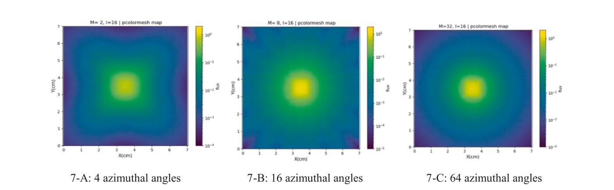
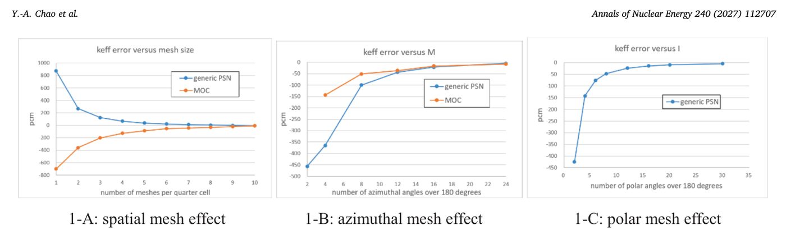
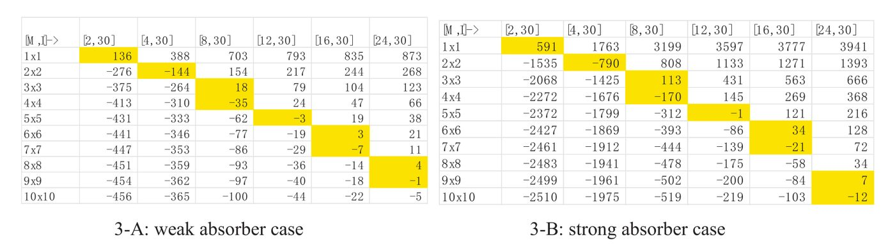
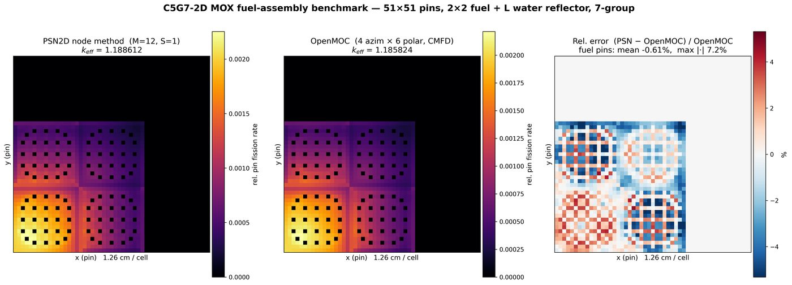
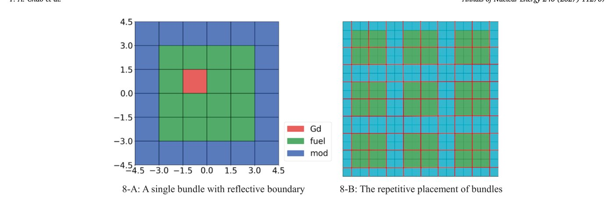
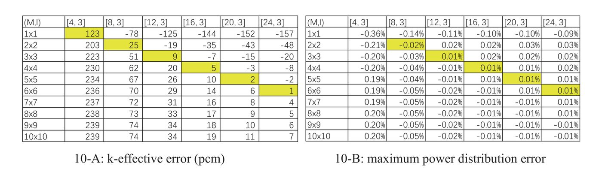

OpenPSN is a neutron transport solver built on the Phase Space Nodal method: it solves the transport equation with the same machinery as a diffusion code, yet delivers transport-grade accuracy — with no ray effects. The full solver runs in this page, in your browser, right now.
Deterministic neutron transport has always been a trade-off: diffusion codes are fast and simple but miss the physics near absorbers and in fine structure; discrete-ordinates codes (SN/MOC) are accurate but expensive — and carry a permanent artefact, ray effects — fake dark corridors between tracked directions that never go away at fixed angular order. PSN resolves the trade-off: each node lives in space × angle, so the angular integral inside a node is continuous, and the node balance closes onto a standard diffusion equation.
A PSN node is a spatial cell × polar segment × azimuthal segment. The angular flux inside is a P1 expansion in Ω·∇, whose φ0 satisfies the standard diffusion equation — k² = 3Σt², angle-free. The node balance closes analytically; face currents are integrated in closed form.
Directions are integrated continuously over each angular segment instead of being discretised into tracked directions. The classic MOC artefact — black corridors between tracks — simply cannot form. Verified against the paper's point-source problem: MOC shows rays at 8, 16, 64 azimuths; PSN is clean at 4.
With mirror boundaries the azimuth couples only m with M−1−m, so the global system block-diagonalises into I/2 × M/2 small dense systems. Coefficients are source-independent → LU-factored once; every power-iteration step is back-substitution. Convergence to 10⁻¹⁰ takes seconds in a browser tab.
A 1 cm source at the centre of a 7 cm scattering/absorbing box, vacuum boundary. MOC sees the source only through directions that happen to hit it — everything between the tracks goes dark. More azimuths fill the gaps, but the artefact is structural. PSN integrates the angular flux continuously, so the dark corridors never appear — not even at 4 azimuthal segments.



The canonical PSN checkerboard: a 2×2 unit-cell lattice of fuel (Σt=1.5, νΣf=0.24) and absorber cells, 1 cm base cells subdivided S×S, all boundaries mirror-reflective, one energy group. Pick a case and press Run — or grab a preset. The solver runs entirely on your machine; nothing is sent to a server.
Each (polar line, azimuthal mirror-pair) is an independent dense system whose coefficients do not depend on the source, so it is factorised once (LU) and every outer power-iteration step only back-substitutes. Same structural trick as the Python reference implementation.
The complete eigenvalue grid of the paper's Sec. 4.1 (both checkerboard cases, S = 1–10, M = 2–24): our values, the printed values and the difference in pcm. The points inside the browser-solvable range were computed by this page's JavaScript engine — they turn green below the moment you run them above.
Look at the error heatmaps in Fig. 3 of the paper: the smallest errors don't sit in the bottom-right corner — they run along a diagonal. A 3×3 spatial grid with 12 azimuths matches a 10×10 grid with 24. The same correlation appears in the BWR bundle problem. We don't fully understand the mathematics yet — it is one of the most interesting open features of the method.
| S | M=2 | M=4 | M=8 | M=12 | M=16 | M=24 |
|---|
Cell format: ours / paper (Δ), Δ = ours − paper in pcm; kref from OpenMC (Romano et al. 2015). Paper values as printed in Ref. [1], Figs. 3-A/B. Points outside the browser range (S ≥ 5) come from the Python reference implementation on a 48-core CPU and are identical to the paper's own appendix tables.

The browser runs the 1-group checkerboard. The full OpenPSN code (Python, multi-group, sparse) carries the same node model into real reactor problems.



In each phase-space node the angular flux is written as a P1 base function in Ω·∇. Its φ0 solves the standard diffusion equation (k² = 3Σt², angle-free); face currents and face fluxes follow from closed-form angular integrals (βi, αf) — no quadrature, no tracked directions.
The map (J₄, q) → (Φ, φ̄, moments) is exactly linear in the 9 unknowns. It is probed once per (material, polar line, azimuth) with nine basis vectors into a 9×9 matrix — the vectorised trick behind the 107× speedup of the reference implementation.
Interfacing all nodes gives a sparse system over face currents. Mirror boundaries couple azimuth m only with M−1−m, so the system block-diagonalises: 15 polar lines × M/2 mirror pairs independent dense blocks, each LU-factored once. Outer power-iteration steps are pure back-substitution — that is why this page converges in seconds on a laptop.
Standard power iteration with k-update, but the fission source keeps the full paraboloidal shape of the flux (q₀, q₁ₓ, q₁ᵧ, q₂ₓ, q₂ᵧ per node). Convergence criterion |Δkeff/keff| < 10⁻¹⁰.